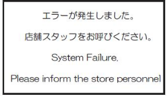
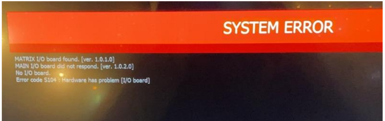
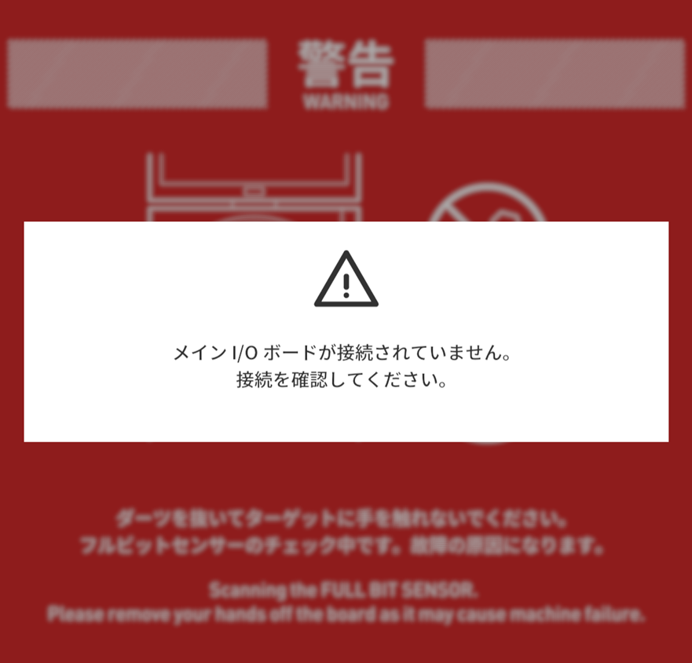
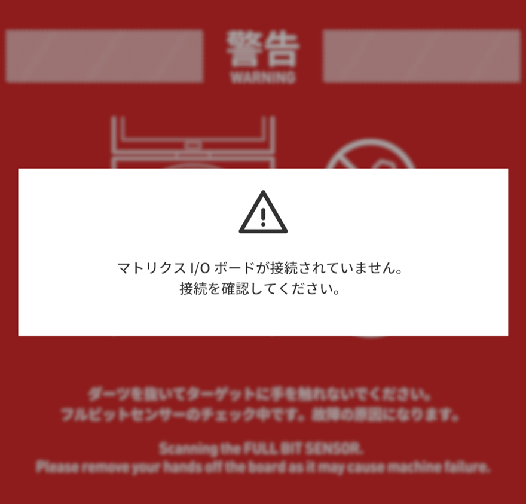
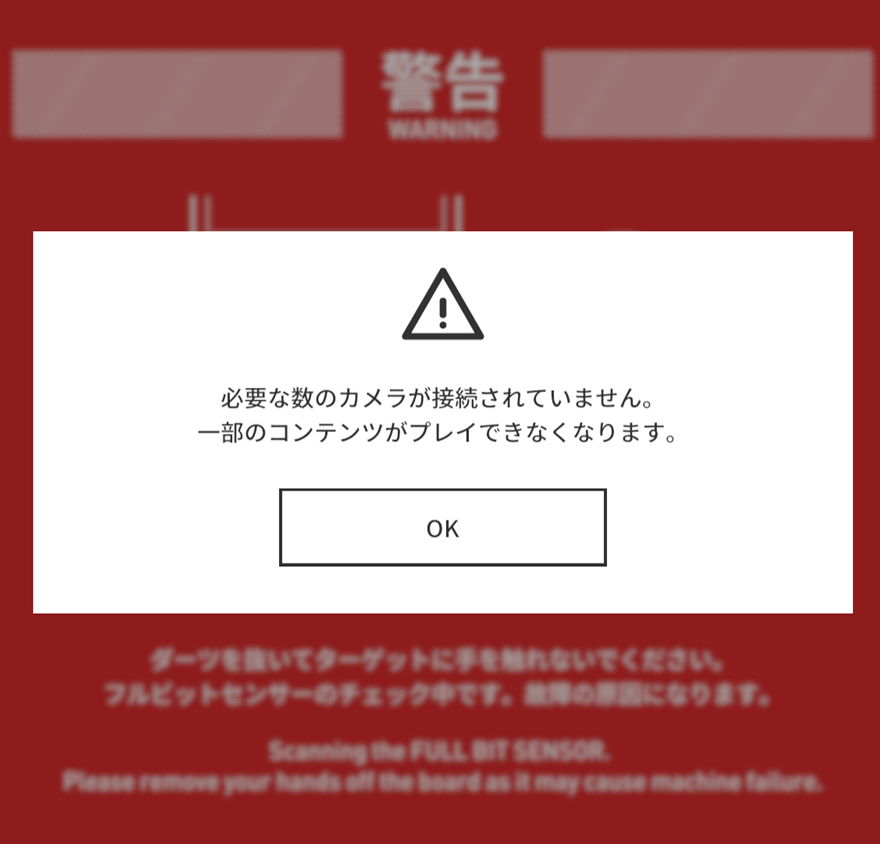
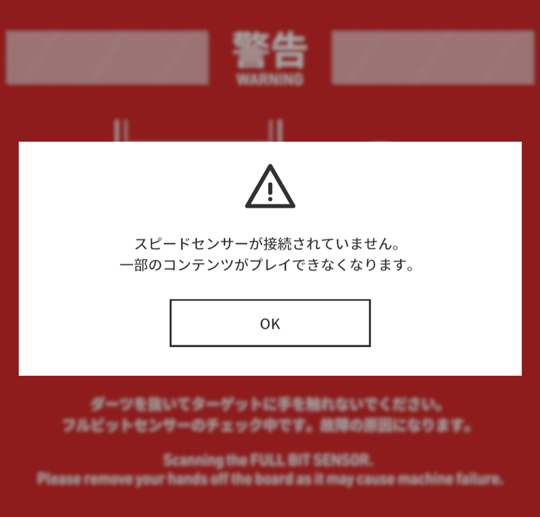
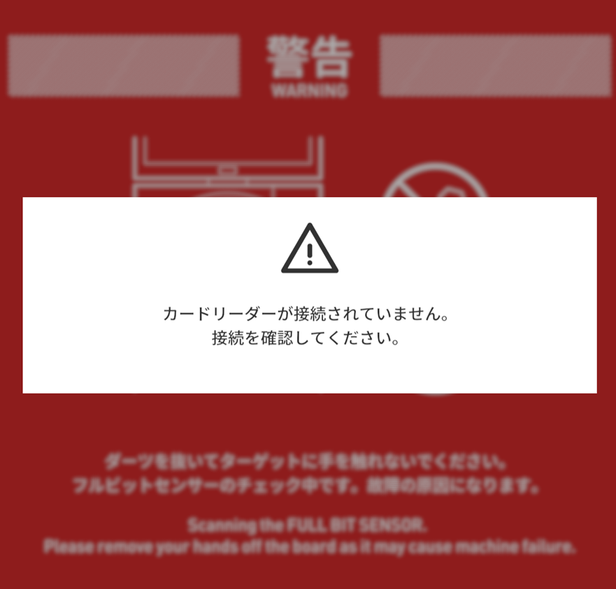
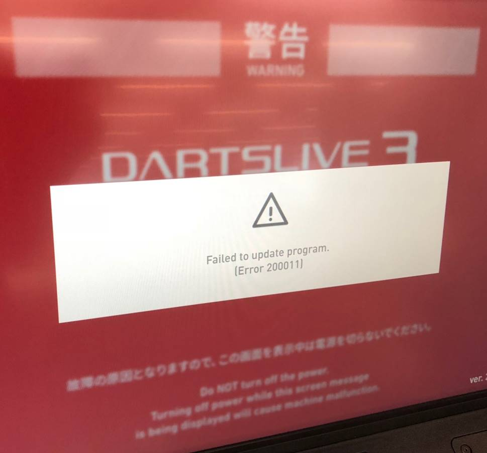

dl3_002_エラーメッセージが表示される
下記から表示されたエラーを選択し、対応を行ってください。 改善されない場合は、表示されたメッセージをお控えの上、弊社営業までお問い合わせください。
エラーメッセージ一覧
・エラーが発生しました。店舗スタッフをお呼びください。(System Failure.Please inform the store personnnel)

こちらをご参照の上、DARTSLIVE3を再起動してください。(表示される画像は上記のものと異なります。)
・「SYSTEM ERROR、Error code S104:Hardware has problem [I/O board]」

●2行目が「MAIN I/O board did not respond」の場合・・・こちらの②をご参照の上、メインI/Oボードの接続を確認してください。
●2行目が「MATRIX I/O board did not respond」の場合・・・こちらの②をご参照の上、マトリクスI/Oボードの接続を確認してください。
・メイン I/O ボードが接続されていません。接続を確認してください。

こちらをご参照の上、メインI/ Oボードの接続を確認してください。・マトリクス I/O ボードが接続されていません。接続を確認してください。

こちらをご参照の上、マトリクス I/Oの接続を確認してください。・ターゲットセンサーが正しく機能していません。お手数ですが店舗スタッフをお呼びください。
上記画像リンク先より、ターゲットセンサーの接続確認、調整を行ってください。
・必要な数のカメラが接続されていません。一部のコンテンツがプレイできなくなります。

・スピードセンサーが接続されていません。一部のコンテンツがプレイできなくなります。

こちらをご参照の上、スピードセンサーの接続を確認してください。・カードリーダーが接続されていません。接続を確認してください。

こちらをご参照の上、カードリーダーの接続を確認してください。・Failed to start system.
DARTSLIVE3のアプリが実行出来なかった時に表示されるメッセージです。 電源をON/OFFしても改善しない場合は、部品の故障が考えられます。 症状をお控えの上、弊社営業にご連絡ください。
・Failed to update program.

・Restarting system.
通信エラーなどが発生した場合に表示されるメッセージです。 自動的にリトライされ、何度か繰り返しメッセージが表示されることがあります。 オフラインで起動してしまう場合には、接続されているLANケーブル等通信機器を確認してください。
Last updated on May 25, 2023